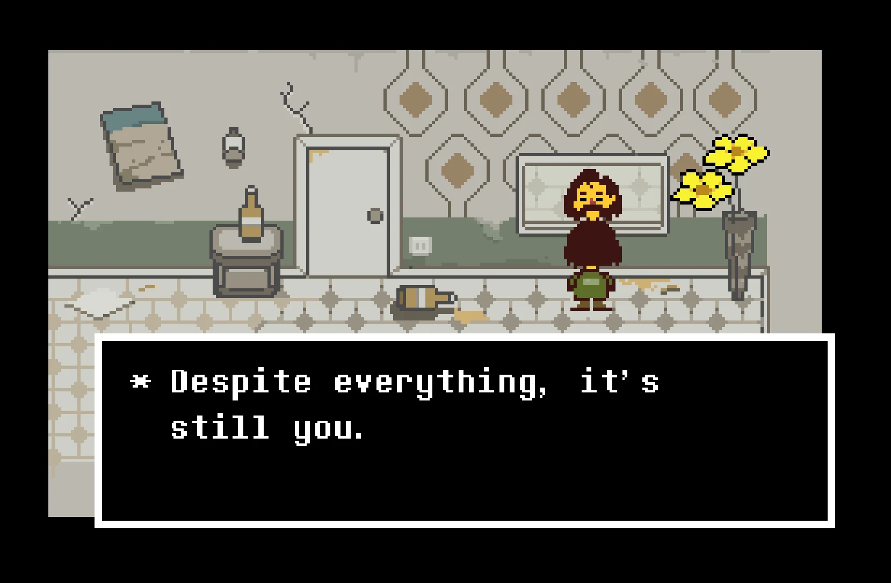

something, something (26/10/25)
I just want to get this off my chest but, you know that I haven't moved on, right? if it's not obvious enough, yes I am. Everything I feel still the same like how I was a exactly a year ago. All my friends called me stupid because of that yeah maybe I am but, no one can understands me so I don't care. So when you started contact me again I got this mixed emotions wherever I want to feel a joy or sorrow. I mean, I am scared of getting the same ending so it got me thinking that I need to avoid whatever I am doing rn. But I choose not to. Maybe I'll be different this time. Just, maybe. If I am strong enough.
This part is what I myself can't admit but, those breakup really breaks me up. And it always feels like my fault though it probably not. What I was expecting is that "okay you just need to move on. Today is painful but it'll go as the time pass. You'll feel better later" but, the time never comes. Life goes on but this thing doesn't want to. It's a miracle that I haven't addicted to anything yet, tried smoking but it sucks...
Looking back when we started to talk again like nothing happened, it makes my chest feels lighter than usual. I am happy that you are still the one I knew. I'm glad that you still can pull out silly jokes and laugh it out loud. So when you said you're having a bad time, I worried a lot. Like, A LOT. I know it's not my fault- It is no one's fault. I just hope I didn't make it worse...
But hey, what I did is genuinely my care... I don't expect anyhing in return, cuz I know it's different this time, and maybe your feelings too. Befriend with you is enough, be able to chit-chat with you is alright. It is better than a cut off...
Healing will took some times, maybe weeks, months, or even years. As long as you still open for me, I'll always be there for you. Till you feel better, or maybe till you find someone, that you think can understand you better than me.
Oh and...
About 'Ego'
Ego is part of you, but not defined AS you. It just happened to be a 'defense mechanism' for you, trying it's best to not hurt again. Someone can't just lower their ego just because someone said so, it applies here too. I can't just say "hey stop being that", it's just stupid and I was (sorry)... No, it's not always your ego's fault. I know you actually care for others and you tried your best to not hurt others. But sometimes, others need to understand to forgive that. Learn to seperate your ego from you. Yes it's there, it's just not who you really are.
Don't ever think you are not deserved to be loved because of that. You are you, and there's people who care about you. All about you. People who can see through your so-called ego and understands you more than that. Don't be scared to hurt others, when people do actually care will understand what you actually think, that you actually care about them too.
And I've learned to accept it.
hi, hello (24/10/25)
heyyo, how r u today/tonight? me hope u do good! walaupun akhir-akhir ini kamu lagi capek ya... but that's okay, everyone can feel tired sometimes, termasuk kamu juga...
Ku tau ga semua orang- termasuk aku sendiri- bisa 100% ngerasain apa yang kamu rasain, tapi jujur, there's little to no things that can hurt more than watching someone you care gettin hurt... Aku gaakan capek buat ngingetin kamu kalo kamu ga sendirian, karena aku gaakan kemana-mana, paling ilang tidur sebentar,.,.
What I wanted to talk abt here is, how grateful I am to have known you since. Makasih udah jadi safe place buat aku cerita, makasih udah mau terima aku sebagai diri aku sendiri. Gak banyak orang bisa lihat aku segimana aku aslinya karena aku takut dicap aneh, that's why I am glad that I can find my place to be myself here with you... I know there's been up and downs between us, tapi yasudahlah, yang sudah lalu biarlah berlalu...
Aku ga tau sampai berapa lama ini bisa bertahan (hoping for a long time), knowing that we're nothing more than a friends rn, but I'll cherish every moments while it lasts...
So, in a quick conclusion, thank you for completing my life